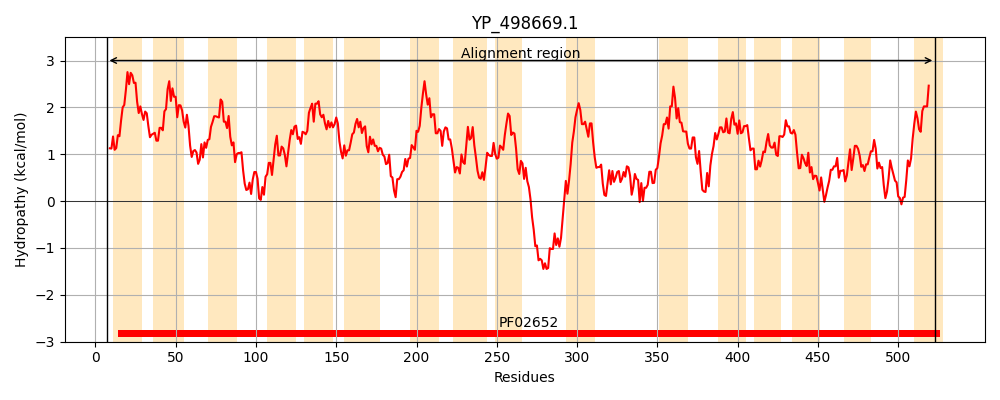
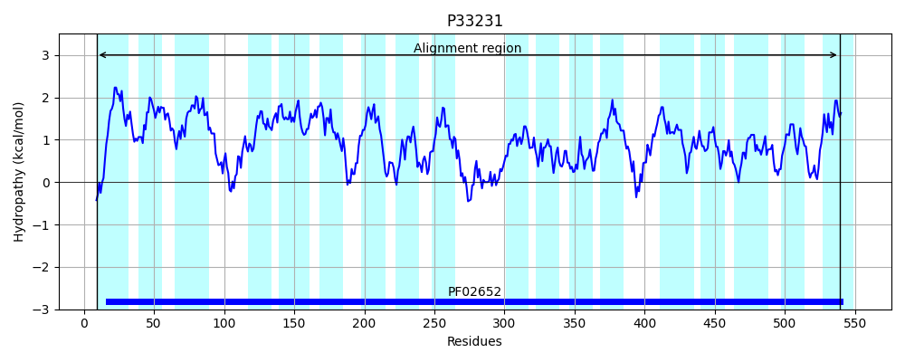
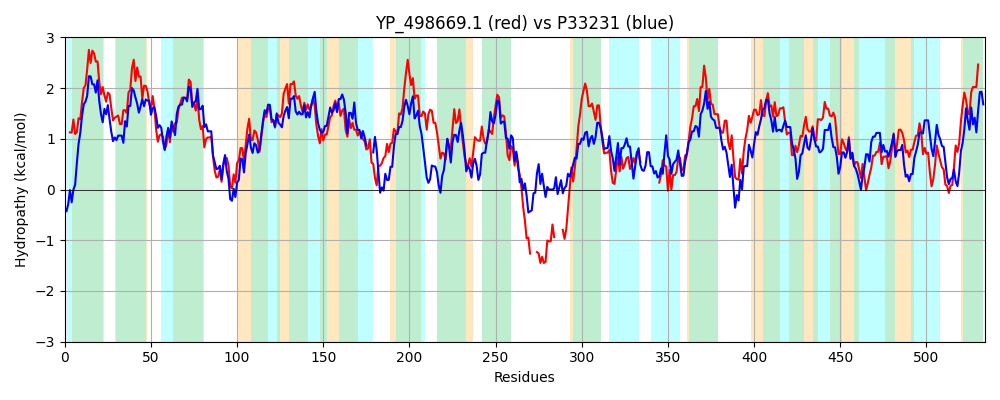

Hit Accession: P33231
Hit TCID: 2.A.14.1.1
Hit Description: gnl|BL_ORD_ID|9896 gnl|TC-DB|P33231|2.A.14.1.1 L-LACTATE PERMEASE - Escherichia coli.
Mach Len: 534
e:0.000000
Query TMS Count : 16
Hit TMS Count: 18
TMS-Overlap Score: 11.550000
Predicted Substrates:CHEBI:29805;glycolate, CHEBI:24996;lactate
BLAST Alignment:
Score: 1097 , Bit scores: 427 bits, E-value: 1.0e-144, Alignment length: 534, Percentage identity: 43
Query: 7 NPFDNVGLSALVAAVPIILFLLCLTVFKMKGIYAALTTLVVTLIVALFVFELPARVSAGAITEGVVAGIFPIGYIVLMAVWLYKVSIKTGQFSIIQDSIASISVDQRIQLLLIGFCFNAFLEGAAGFGVPIAICAVLLIQLGFEPLKAAMLCLIANGAAGAFGAIGLPVSIIDTFNLSGGVTTLDVARYSALTLPILNFIIPFVLVFIVDGMKGIKEILPVILTVSGTYTGLQLLLTIFHGPELADIIPSLATMVVLAFVCRKFKPKNIFR---LEASEHKIQKR----TPKEIVFAWSPFVILTAFVLVWSAPFFKKLFQPGGALESLVIKLPI----------PNTVSDLSPKGIALRLDLIGATGTAILLTVIITILITKLKWKSAGALLVEAIKELWLPILTISAILAIAKVMTYGGLTVAIGQGIAKAGAIFPLFSPVLGWIGVFMTGSVVNNNTLFAPIQATVAQQISTSGSLLVAANTAGGVAAKLISPQSIAIATAAVKKVGEESALLKMTLKYSIIFVAFICVWT 523
+P N+ LS+L+A++PI+ F L K+KG AA T+ + L VAL +++P + ++ G G++PI +I++ AV++YK+S+KTGQF II+ SI SI+ DQR+Q+L++GFCF AFLEGAAGFG P+AI A LL+ LGF+PL AA LCLI N A AFGA+G+P+ + G+ + ++ + LP + I+ F ++ I+DG +GIKE P ++ G++ Q L + F GPEL DII SL +++ L ++++P +FR L AS+ + T +++ AW+PF+ LTA V +WS P FK LF GGAL VI +P+ P VS+ + + D ATGTAIL +++I+ K+K A + +KEL LPI +I +LA A + Y GL+ + +A G F FSP LGW+GVF+TGS ++N LFA +QAT AQQI S LLVAANT GGV K+ISPQSIAIA AAV VG+ES L + T+K+S+IF + V T
Sbjct: 9 DPAGNIWLSSLIASLPILFFFFALIKLKLKGYVAASWTVAIALAVALLFYKMPVANALASVVYGFFYGLWPIAWIIIAAVFVYKISVKTGQFDIIRSSILSITPDQRLQMLIVGFCFGAFLEGAAGFGAPVAITAALLVGLGFKPLYAAGLCLIVNTAPVAFGAMGIPILVAGQVT---GIDSFEIGQMVGRQLPFMTIIVLFWIMAIMDGWRGIKETWPAVVVAGGSFAIAQYLSSNFIGPELPDIISSLVSLLCLTLFLKRWQPVRVFRFGDLGASQVDMTLAHTGYTAGQVLRAWTPFLFLTATVTLWSIPPFKALFASGGALYEWVINIPVPYLDKLVARMPPVVSEATAYAAVFKFDWFSATGTAILFAALLSIVWLKMKPSDAISTFGSTLKELALPIYSIGMVLAFAFISNYSGLSSTLALALAHTGHAFTFFSPFLGWLGVFLTGSDTSSNALFAALQATAAQQIGVSDLLLVAANTTGGVTGKMISPQSIAIACAAVGLVGKESDLFRFTVKHSLIFTCIVGVIT 539 | Protein Hydropathy Plots: |
|---|
|  |  |
Pairwise Alignment-Hydropathy Plot:
|
|---|
|  |